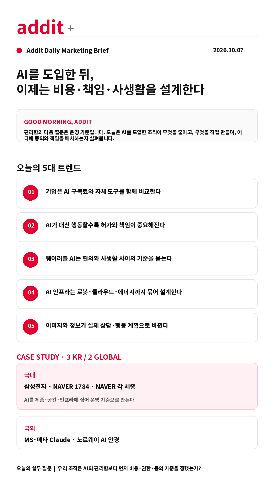

addit+
2026.10.07 Wed
ONLINE · SNS MARKETING BRIEFING
AI를 도입한 뒤,
이제는 비용·책임·사생활을 설계한다
AI는 더 많이 쓰는 기술이 아니라, 어디까지 맡기고 누가 책임질지 정하는 운영 체계가 되고 있습니다.
GOOD MORNING, ADDIT
편리함의 다음 질문은 운영 기준입니다. 오늘은 AI를 도입한 조직이 무엇을 줄이고, 무엇을 직접 만들며, 어디에 동의와 책임을 배치하는지 살펴봅니다.
편리함의 다음 질문은 운영 기준입니다. 오늘은 AI를 도입한 조직이 무엇을 줄이고, 무엇을 직접 만들며, 어디에 동의와 책임을 배치하는지 살펴봅니다.
TODAY'S 5 SIGNALS
AI 도입 이후, 운영 기준이 바뀌는 다섯 장면
AI가 대신 행동할수록 허가와 책임이 중요해진다
웨어러블 AI는 편의와 사생활 사이의 기준을 묻는다
AI 인프라는 로봇·클라우드·에너지까지 묶어 설계한다
이미지와 정보가 실제 상담·행동 계획으로 바뀐다
CASE STUDY · 3 KR / 2 GLOBAL
원문 이미지로 확인하는 오늘의 실행 사례
 KR · Samsung Newsroom
KR · Samsung Newsroom삼성전자 — Galaxy Buds On
클립형 이어폰에 Galaxy AI·Gemini Live·퀵 보이스 메모·헤드 제스처를 결합해 AI를 일상 동작에 심었습니다. AI 제품은 기능 목록보다 사용 상황과 손을 쓰지 않아도 되는 순간을 먼저 설계해야 합니다.
삼성전자 뉴스룸 원문 보기 →
 KR · NAVER 1784
KR · NAVER 1784NAVER 1784 — AI를 일하는 공간의 운영체계로
로보틱스·자율주행·AI·5G·클라우드를 하나의 테스트베드에 통합하고 Rookie, Roboport, ARC 등 로봇·클라우드 인텔리전스를 실제 공간에서 운영합니다.
NAVER 1784 원문 보기 →
 KR · NAVER Data Center GAK
KR · NAVER Data Center GAKNAVER 데이터센터 각 세종 — 비용·안정성·지속가능성
서버 자산 관리를 로봇으로 자동화하고, 자연 외기 냉방과 폐열·빗물 재활용 등 AI 인프라의 운영 비용과 안정성을 함께 설계합니다.
데이터센터 각 세종 원문 보기 →
 GLOBAL · AI Times
GLOBAL · AI TimesMicrosoft·Meta — Claude 사용 축소
AI타임스는 MS와 메타가 직원들의 Claude 사용을 줄이고 자체 AI와 경쟁 모델 활용을 늘리고 있다고 보도했습니다. 사내 AI 도입은 사용량 확대보다 업무별 비용·보안·대체 가능성 비교가 먼저입니다.
AI타임스 원문 보기 →
 GLOBAL · AI Times
GLOBAL · AI TimesNorway — AI 안경 공공장소 규제 추진
카메라·마이크를 탑재한 AI 안경의 공공장소 사용 제한 논의는 제품 편익과 주변인의 동의 기준을 동시에 설계해야 한다는 점을 보여줍니다.
AI타임스 원문 보기 →
PLATFORM WATCH
원고에서 확인한 다음 운영 변화
Pinterest AI 미용 가이드
헤어·네일 이미지를 상담 표현, 예상 비용·시간, 관리 정보로 바꿔 발견을 실행 준비로 연결합니다.
TechCrunch 원문 →AI 에이전트와 플랫폼 책임
위키미디어의 무단 편집·대량 접근 이슈는 자동화 범위와 속도 제한이 운영 설계의 일부가 되어야 함을 보여줍니다.
The Decoder 원문 →뉴욕시의회 AI 청문회
OpenAI·Anthropic·Google·Meta를 불러 AI 위험과 지방정부 규제를 공개적으로 논의했습니다.
AI타임스 원문 →미국 AI 정책 조직
AI 정책이 산업 경쟁뿐 아니라 국가안보·정보기관·개인정보 논의와 함께 다뤄지고 있습니다.
AI타임스 원문 →
ADDIT INSIGHT
AI는 더 많이 쓰는 기술이 아니라, 어디까지 맡기고 누가 책임질지 정하는 운영 체계입니다.
ACTION CHECK
- AI 사용료·보안·대체 업무를 비교했는가?
- 에이전트의 허용 행동과 승인 단계를 구분했는가?
- 촬영·음성·위치 데이터의 동의 기준이 있는가?
- 전력·보안·복구를 AI 인프라 제안에 포함했는가?
- 콘텐츠가 다음 행동으로 이어지는가?